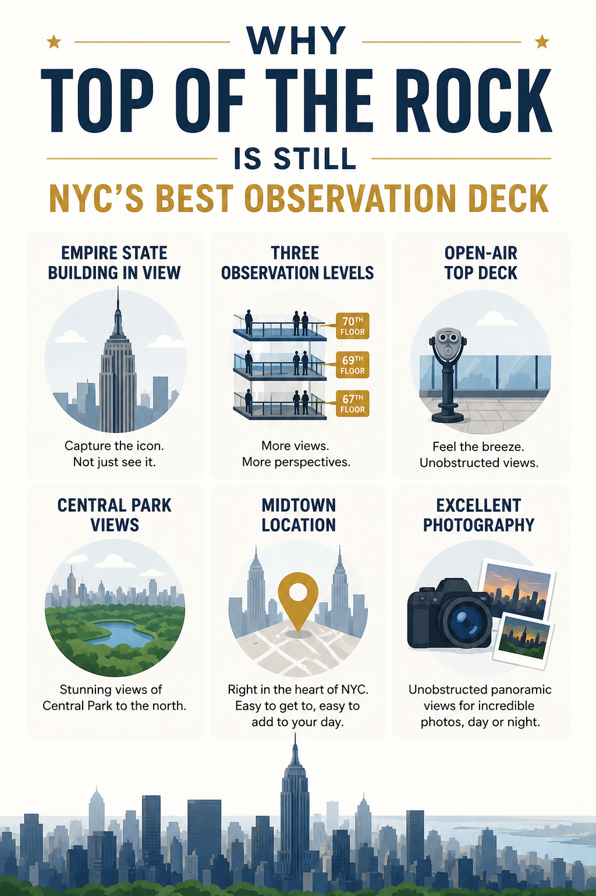
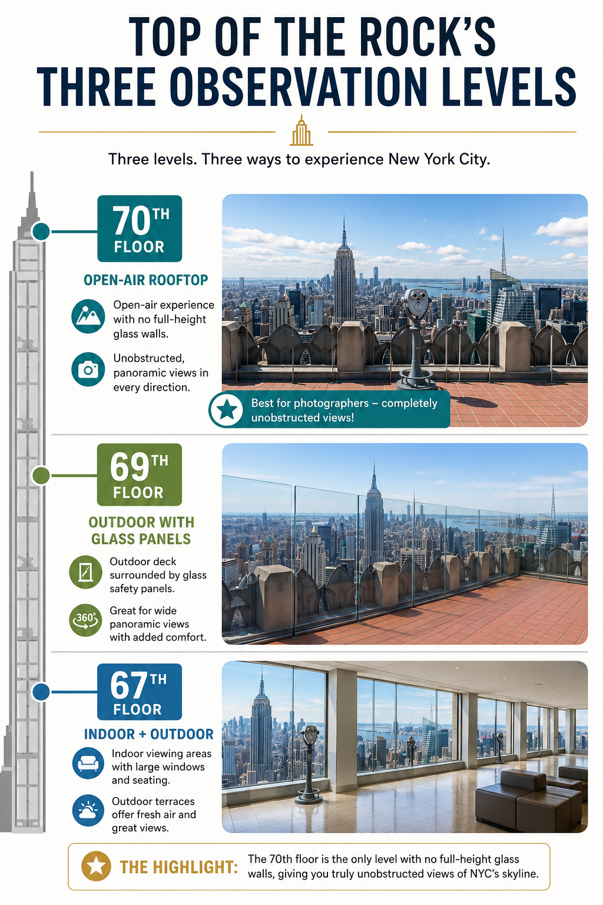

There are now five major observation decks in New York City, each promising the best views, the tallest platform, or the most Instagram-worthy experience.
After visiting all of them, here’s my opinion:
If I could only recommend one observation deck to a first-time visitor, I’d still choose Top of the Rock.
Not because it’s the tallest. Not because it’s the newest. And certainly not because it has the most thrilling attractions. I recommend it because it offers the skyline most people imagine when they dream of New York City.
If you’re deciding between multiple decks, read our complete comparison of Edge vs Top of the Rock vs Empire State Building before buying your tickets.
From the very top, you get the Empire State Building standing proudly in front of you, Central Park stretching endlessly to the north, and Manhattan unfolding in every direction. It’s one of the few places where the skyline feels complete rather than missing its most famous building. But here’s the catch — Top of the Rock is also one of those attractions where small planning decisions make a huge difference.
Choose the wrong ticket time and you might spend half your visit waiting for space at the railing. Visit on the right evening, however, and you’ll watch Manhattan transform from bright daylight to golden hour, then into a sea of glittering lights — all during a single visit. That’s exactly what this guide is for.
| Location | 30 Rockefeller Plaza, Midtown Manhattan |
| Observation Levels | 67th, 69th & 70th Floors |
| Height | Approximately 850 ft (260 m) |
| Best Known For | The best view of the Empire State Building |
| Recommended Visit Time | 1–2 hours (2+ hours if visiting around sunset) |
| Best Time to Visit | Around one hour before sunset |
| Typical Hours | Daily 8:00 AM – midnight (last entry ~11:10 PM) |
| Fully Wheelchair Accessible | Yes — elevators to every level |
| Indoor & Outdoor Viewing | Yes |
| Included in Attraction Passes | Yes (depending on the pass) |
Is Top of the Rock Worth It?
Absolutely. In fact, it’s one of the few attractions in New York that actually exceeds expectations. Each observation deck has something it does exceptionally well — Edge delivers adrenaline, SUMMIT offers an immersive experience, the Empire State Building lets you stand on one of the world’s most famous skyscrapers. But Top of the Rock quietly excels at something even more important: it gives you the most complete skyline in New York City.
Look south and the Empire State Building dominates the skyline. Turn north and you’ll see the full length of Central Park. Face west and the Hudson River stretches toward New Jersey. Turn east and you’ll spot the East River, Roosevelt Island, Queens, and dozens of buildings most visitors overlook. Every direction feels different. Every direction is worth exploring.
Why It’s Still the Best Observation Deck for Most Visitors
1 You Actually Get to See the Empire State Building
This is the biggest reason. The Empire State Building isn’t just another skyscraper — it’s arguably the most recognizable building in New York City. If you’re standing on it, it’s missing from every photo you take. Top of the Rock solves that beautifully. Instead of standing on New York’s most famous building, you’re looking directly at it. The result is a skyline that instantly feels more iconic. It’s one of those things most people don’t think about until they’re standing there — then it suddenly makes perfect sense.
2 The Top Observation Deck Is Built for Photography
The 70th floor has an open-air perimeter with unobstructed views. Unlike many observation decks surrounded by full-height glass walls, that means no distracting reflections, no fingerprints on the glass, and no glare ruining your sunset shots. Whether you’re using a smartphone or a professional camera, it’s one of the easiest observation decks in the city to shoot from.
3 The City Is the Main Attraction
Some observation decks are designed around the experience of the building itself — glass floors, mirror rooms, thrill attractions. Top of the Rock takes the opposite approach. The city remains the star. Everything else simply exists to help you appreciate it.
4 It Rewards Visitors Who Slow Down
Many visitors plan for 30 minutes. That’s enough time to take a few pictures. It’s not enough time to experience the skyline. If you visit around sunset, you’ll watch Manhattan change through four completely different moods:
- Daylight
- Golden hour
- Sunset
- Blue hour & night skyline
That’s when Top of the Rock becomes unforgettable.

Before You Buy Your Ticket
Understanding your ticket options before booking can save you money — and help you avoid disappointment if you’re hoping to visit at sunset.
| Ticket | What’s Included | My Recommendation |
|---|---|---|
| General Admission | Access to all three observation levels (67th, 69th, and 70th floors) | Best choice for almost everyone |
| Beam Experience | A moving recreation of the famous Lunch Atop a Skyscraper construction beam | Worth considering for a unique photo or special occasion |
| Skylift | A rotating platform that lifts you even higher above the observation deck | Fun, but not essential |
| VIP Experience | Expedited entry, Beam, Skylift, and VIP benefits | Best for special celebrations |
Every General Admission ticket includes access to all three observation levels. The upgrades simply add extra experiences — they don’t unlock better views. Put your money toward a better dinner after your visit rather than upgrading unless one of those experiences genuinely appeals to you.
Book Top of the Rock on Viator
Reserve your tickets as early as possible if you’re planning to visit around sunset — those entry times are the first to sell out, especially during spring, summer, and the holiday season. Booking through Viator gives you Reserve Now, Pay Later and free cancellation on most tickets.
Reserve Tickets on ViatorOpening Hours
Top of the Rock is typically open daily from 8:00 AM until midnight, with the last entry around 11:10 PM. Operating hours can change for holidays, private events, or seasonal schedules — always check the official Rockefeller Center website before your visit.
Where Is It & How to Get There
Top of the Rock sits inside 30 Rockefeller Plaza, right in the heart of Midtown Manhattan. One of its biggest advantages is location — instead of making a special trip across the city, you can easily combine it with nearby attractions. Within a 10–15 minute walk:
- Rockefeller Center Plaza
- St. Patrick’s Cathedral
- Fifth Avenue
- Radio City Music Hall
- MoMA
- Bryant Park & New York Public Library
- Times Square
Top of the Rock fits perfectly into a full Midtown sightseeing day. Our complete NYC itinerary planning guide shows you exactly how to group attractions by neighborhood so nothing feels rushed.
Nearest Subway
47–50 Sts – Rockefeller Center
Served by the B, D, F, and M lines. The most direct option from most parts of Manhattan.
Multiple Options
- 49 St (N, R, W)
- 5 Av/53 St (E)
- 51 St (6)
- Times Square (~10–15 min walk)
Your timed ticket reserves your arrival window — not the exact moment you step onto the deck. You’ll still go through airport-style security (metal detectors and bag inspection) before reaching the elevators. Around sunset this security checkpoint becomes the longest part of the experience. Travel light, have your ticket ready, and arrive at least 20–30 minutes before your booked time.
The Three Observation Decks: Which Floor Is Actually the Best?
One thing that surprises almost everyone on their first visit is that Top of the Rock isn’t one observation deck — it’s three. Most travel guides simply tell you to “go to the top.” That’s technically correct, but you’ll miss half the experience if you sprint straight to the 70th floor and never come back down.
Best for sheltered viewing & orientation
Both indoor viewing areas and outdoor terraces protected by glass panels. Most people rush past it — that’s a mistake.
- Much less exposed to wind
- Indoor areas if weather turns
- Easier to sit and relax
- Usually quieter than the upper deck
- Good place to orient yourself
Nearly identical views, less crowded
Often overshadowed by the famous rooftop above, but arguably the most practical viewing level. Many visitors skip it — which is exactly why it’s worth spending time here.
- Excellent panoramic views
- More room to walk around
- Outdoor observation areas
- Easier to find space at peak times
- Good backup when the top is crowded
Unobstructed open-air rooftop
No large glass walls surrounding the perimeter — low transparent barriers leave the skyline almost completely open. This single design choice is why photographers consistently rank Top of the Rock as the city’s best deck.
- Completely open-air
- No distracting reflections
- Incredible panoramic views
- Cleaner skyline photos & portraits
- Classic Empire State Building view
Instead of immediately joining the crowd on the rooftop, explore the 67th floor first → walk around the 69th → then head to the 70th floor last. By the time you’ve explored the lower decks, the crowd upstairs has often shifted and you’ll find better photo opportunities. Not only does this make the experience feel less rushed, but you’ll already know exactly where you want to take photos by the time you reach the top.

When Is the Best Time to Visit Top of the Rock?
The honest answer? There isn’t one perfect time. There are four excellent times — and each gives you a completely different experience.
Morning
9:00–11:00 AM. Short security lines, more space at the railings, often crisp visibility. Best for families and peaceful sightseeing.
- Quietest time of day
- Cooler in summer
- Empire State Building lighting not visible
Midday
11:00 AM–3:00 PM. Tour groups begin arriving. Harsher lighting, especially in summer. Usually the least photogenic time of day.
- Views still good
- More tour groups
- Flat, harsh light
Sunset
Book 45–60 min before sunset, not at sunset. You’ll catch daylight, golden hour, sunset, blue hour, and night skyline on one ticket.
- Most dramatic views
- Busiest period
- Sells out first
After Dark
Blue hour and full night views. Office lights, glowing streets, illuminated Empire State Building. Crowds thinner. One of the most underrated visits.
- Thinner crowds
- Richer blue-hour colors
- Best for repeat visitors
Most people book their ticket for sunset. Don’t. By the time you’ve cleared security, ridden the elevator, and found a viewing spot, you’ve already missed part of the show. Book 45–60 minutes before sunset instead. And when the sun disappears and half the crowd leaves? Stay. That’s when blue hour begins and the deck starts feeling less crowded again.
Crowd Patterns Throughout the Day
| Time | Crowd Level | What to Expect |
|---|---|---|
| 9:00–10:00 AM | Very Low | Quietest time, excellent for photography |
| 10:00 AM–12:00 PM | Low | Comfortable sightseeing |
| 12:00–2:00 PM | Moderate | More tour groups arriving |
| 2:00–4:00 PM | Moderate–High | Crowds steadily increase |
| 4:00 PM–Sunset | High | Sunset visitors begin arriving |
| Sunset | Very High | Peak crowd levels |
| 20–30 Min After Sunset | Moderate | Many visitors leave — easier to move around |
| Final Hour Before Closing | Low–Moderate | Relaxed atmosphere with beautiful night views |
Quietest Days & Best Season
Tuesday, Wednesday, and Thursday mornings are consistently calmer. Avoid Saturdays, holiday weekends, Thanksgiving week, Christmas week, New Year, Spring Break, and July–August afternoons.
October is the standout. Central Park is filled with fall colors, visibility is usually excellent, temperatures are comfortable, and sunset arrives early enough that you don’t have to stay out late.
| Season | Why Visit | Things to Consider |
|---|---|---|
| Spring | Comfortable weather and moderate crowds | Some hazy days |
| Summer | Long evenings and beautiful sunsets | Hot, humid and the busiest season |
| Fall | Crisp air, colorful Central Park, excellent visibility | Sunset tickets sell quickly |
| Winter | Sharp skyline views and smaller crowds | Strong winds and very cold rooftop conditions |
How Long Should You Plan to Stay?
| Visitor Type | Typical Visit Length |
|---|---|
| Quick sightseeing stop | 30–45 minutes |
| Most first-time visitors | 60–90 minutes |
| Sunset visit | 90–120 minutes |
| Photography enthusiasts | Up to 2 hours or more |
Don’t squeeze this into a tight itinerary. Give yourself enough time to slow down, explore all three levels, and simply enjoy watching the city change beneath you.
Photography Tips & Best Viewpoints
If there’s one reason to keep recommending Top of the Rock over every other observation deck in New York City, it’s this: it makes photography incredibly easy. You don’t need an expensive camera. You don’t need to be a professional photographer. And unlike several other observation decks, you won’t spend half your visit avoiding reflections in the glass.
The Four Best Photo Spots
The Classic Empire State Building View
Head to the south-facing side of the 70th floor. The Empire State Building front and center with Midtown and Lower Manhattan stretching behind it — the definitive New York postcard shot. Expect to wait a few minutes at peak times.
The Most Overlooked View
Most people never spend enough time looking north. The Central Park view is completely different — an enormous green rectangle stretching toward Harlem. In autumn, the changing leaves create one of the most colorful city views anywhere in New York.
The Quiet Corners
People stop at the first railing they reach, creating unnecessary congestion. If you simply continue walking around the deck, you’ll find much quieter viewing areas. The northeast and northwest sides are far less crowded than the Empire State Building viewpoint.
The Sunset Western Side
For sunset itself, the western side of the deck deserves more attention. Watching the sun sink behind New Jersey while the Manhattan skyline slowly lights up is one of those moments that reminds you why observation decks exist in the first place.
Smartphone Tips
Clean Your Lens
The easiest improvement you can make. A quick wipe with a microfiber cloth can dramatically sharpen every photo.
Lower Exposure Slightly
Tap the brightest part of the skyline and reduce exposure. This preserves detail in building lights and prevents bright signs from overexposing.
Use Night Mode After Sunset
Hold your phone as steady as possible. The results are often surprisingly close to what you’d expect from a dedicated camera.
Take Multiple Shots
Wind on the open-air 70th floor can cause slight movement. Take several frames and you’ll almost always find one noticeably sharper than the others.
DSLR & Mirrorless Tips
| Time of Day | Settings Guidance |
|---|---|
| During the Day | ISO 100, around f/8, let shutter speed adjust automatically |
| Around Sunset | Raise ISO gradually as light fades — ISO 200–400 works well before darkness |
| Blue Hour | Increase ISO rather than risking blur — tripods are not permitted; use image stabilization |
Absolutely. A wide-angle lens lets you capture the Empire State Building, surrounding skyline, dramatic foreground, and sweeping panoramas all in one frame. If you enjoy cityscape photography, it’s easily the most useful lens to bring.
The moment the sun disappears, you’ll notice a wave of people heading for the elevators. Resist the temptation to follow them. About 20–30 minutes after sunset, New York transforms — the sky turns deep blue, office lights come on, the Empire State Building glows, the streets become rivers of headlights. The crowds have thinned out. In my opinion, blue hour is when Top of the Rock looks its absolute best.
Visiting as a Family, Couple, or Solo
Works Extremely Well
Kids love spotting famous buildings, looking for Central Park, and watching yellow taxis from above. Avoid sunset at weekends when crowds become dense. Morning visits are much more relaxed for young children.
One of NYC’s Most Romantic Views
Honeymoon, anniversary, or just a special trip — Top of the Rock deserves a spot. Your photos naturally include the Empire State Building behind you, something you obviously can’t capture standing on it.
Easy to Enjoy Alone
One of the easiest NYC attractions to visit solo. Visitors are generally friendly, and it’s common for people to offer to take photos for one another.
Wind, Restrooms, Food & Seating
Even on warm days, the open-air 70th floor catches a surprising amount of wind. Hair blows, loose hats become airborne, phones feel less stable. Temperatures feel several degrees cooler than street level. In winter, don’t underestimate how cold it can feel. If you’re planning portraits, bring a hair tie. If visiting in cold months, bring gloves — your fingers will need them for any camera or phone photography.
Restrooms
Available on the 66th floor and in the concourse before heading upstairs. Use one before going to the observation decks — especially around sunset when elevator traffic is at its busiest.
Food & Drinks
The Weather Room Café & Bar is a good option before or after your visit. Seating on the observation levels is limited — most people spend their time walking between viewpoints.
The 10 Biggest Mistakes First-Time Visitors Make
- 1Booking a ticket instead of 45–60 minutes earlier — and missing golden hour entirely.
- 2Going straight to the 70th floor without exploring the lower levels first.
- 3Leaving immediately after the sun sets and missing blue hour.
- 4Only photographing the Empire State Building and ignoring the rest of the skyline.
- 5Forgetting to check the visibility forecast, not just the rain forecast.
- 6Wearing too few layers because the weather feels warm at street level.
- 7Bringing a tripod, only to discover it’s not permitted.
- 8Assuming the visit only takes 20–30 minutes and rushing through it.
- 9Stopping at the first railing instead of walking the entire perimeter to find quieter viewpoints.
- 10Thinking the tallest observation deck automatically has the best views.
Reserve Your Top of the Rock Tickets Now
Sunset and weekend time slots are always the first to go — especially during spring, summer, and the holiday season. Secure your preferred entry time now with Reserve Now, Pay Later and free cancellation on most bookings.
Reserve on ViatorPractical Tips I Wish I’d Known Before My First Visit
- Walk the entire deck before taking a single photo. The first viewpoint you reach is usually the busiest. Do one complete lap first. You’ll discover quieter corners, different lighting, and angles that many visitors never bother exploring.
- Don’t race straight to the 70th floor. Explore the 67th, spend a few minutes on the 69th, then head to the top once you’ve got your bearings. It’s a calmer start and helps you appreciate how each level offers a slightly different perspective.
- Stay after sunset. As soon as the sun dips, half the crowd heads for the elevators. Stay 20–30 minutes more. City lights are brighter, crowds are thinner, blue hour creates richer colors, and you’ll often find much easier access to photo spots.
- Turn around and look north. Everyone comes for the Empire State Building. But the view over Central Park is equally impressive, especially in autumn when the trees turn red, orange, and gold. Easy to miss because the Midtown skyline steals the spotlight.
- Check visibility — not just rain. A cloudless day isn’t automatically the best photography day. Humidity and haze can soften the skyline considerably. Some of the best visits happen on days with dramatic clouds and excellent visibility rather than perfectly blue skies.
- Clean your phone camera lens. It takes two seconds and often makes a bigger difference than buying a more expensive phone.